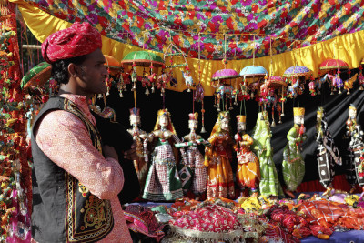
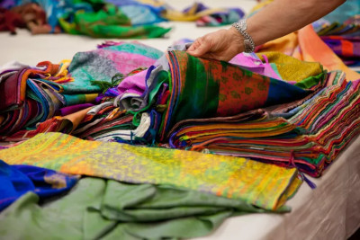
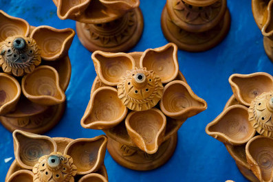

Street Markets
1. Janpath and Tibetan Market
This very popular and lively Delhi market, which was recently given a makeover, has something for everyone. You'll find goods from everywhere in India and Tibet here, and it's a great place to shop for things to take back home. However, you'll need all your bargaining skills to get a really decent price.
Location: Janpath, just off Connaught Place, in New Delhi.
What to Buy: Handicrafts, hippy clothing, shoes, paintings, brassware, Indian artifacts, leather work, and cheap jewelry.
2. Dilli Haat

This huge Delhi market has been deliberately made to feel like a traditional weekly village market, called a haat. Small thatched roof cottages with a village atmosphere give it great ambiance. The market offers an exciting blend of handicrafts from all over India, food, and cultural and music
Location: Opposite INA Market, south Delhi.
What to Buy: Indian handcrafts and artifacts.
3.Paharganj
Some of the best bargain shopping in Delhi can be found in the crumbling and chaotic Main Bazaar of the Paharganj traveler ghetto. Many of the shops in Paharganj also deal in wholesale and export to foreign countries, making it a good place to come and hunt out unique and inexpensive goods to import back home.
Location: Paharganj Main Bazaar, opposite the New Delhi Railway Station.
What to Buy: Clothes, shoes, jewelry, books, music, textiles, handicrafts, hookah pipes, incense.
4. Sarojini Nagar
Sarojini Nagar is most famous for its really cheap designer clothes and reputable brands that have been rejected from export, either because of surplus quantity or small manufacturing defects. Shops and stalls, selling all kinds of clothes and fashion accessories, sprawl onto the streets. There's also a sweet market (Babu Market) and vegetable market (Subzi Mundi) in the area.
Location: South Delhi, near Safdarjung Airport.
What to Buy: Designer clothes, Indian clothes, fashion accessories, shoes.
5.Chandni Chowk
The shopping district of Chandni Chowk has been in existence for hundreds of years and an exploration of its winding, narrow alleyways is certainly an adventure.For fabrics, head to Katra Neel. In the Bhagirath Palace area, you'll find a huge range of electronics. Dariba Kalan is Old Delhi's ancient silver market full of silver jewelry. Kinari bazaar sells everything you need for a wedding. Khari Baoli has Asia's largest spice market.
Location: Old Delhi.
What to Buy: Fabrics, jewelry, spices, and electronic goods.
6. Khan Market
Established in 1951, Khan Market is a small U-shaped market that's one of Delhi's classiest. Bargain hunters are likely to be disappointed at this market. It's got a loyal following who go there to shop at its branded outlets. One of the best things about this market is its interesting book shops.
Location: New Delhi, not far from India Gate.
What to Buy: Books, music, branded and tailored clothes, Ayurvedic food and cosmetics, and home furnishings.
7. Shankar Market

If you're looking to buy fabrics by the meter, Shankar Market is where you should head! It has more than 150 shops and stalls spread over two floors, stocking everything from plain cotton to silk brocades. There are all kinds of hand-loom textiles to drool over including ikat, block prints, and weaves from Odisha, Bengal, and Andhra Pradesh. The market's central Delhi location is handy too!
Location: Opposite Connaught Place M-Block.
What to Buy: Fabrics.
8. Sundar Nagar
This quaint market attracts quite a few rich Indian socialites because of its art and antique shops. It's a well-designed market in an upscale neighborhood. You'll also find some wonderful tea shops there. Try the Asia Tea House (formerly Asia Tea House) and Mittal Tea House. They're situated next to each other.
Location: Off Mathura Road in New Delhi, not too far away from Connaught Place, near the zoo and Oberoi Hotel.
What to Buy: Tea, silver jewelry, art, textiles, carpets, and antiques.
9. Lajpat Nagar (Central Market)
The hectic Lajpat Nagar market provides an interesting glimpse into Indian culture. It's one of the oldest markets in India and is abuzz with middle-class Indian shoppers, all swarming around its roadside stalls and showrooms. Reasonably priced Indian kurti tops and salwaar kameez suits are popular items. Be sure to bargain hard! The market also has Mehendiwalas, who will apply beautiful henna designs to your hands with astonishing speed
Location: South Delhi, near Defense Colony.
What to Buy: Indian clothing, shoes, bags, accessories (including Indian bangles), and home furnishings.
10. Matka Market

Pottery from all over India is available at Matka Market in south Delhi. The market is a fantastic place to shop for festival decorations, especially during Diwali. The range of colorful clay diyas and pots is astonishing, with more than 100 different vendors. Other items commonly available at the market include blue Jaipuri pottery, terracotta Bankura horses, clay idols of Hindu gods and goddesses, garden pots and plant holders, vases, lanterns and earthen wind chimes.
Location: A.K. Roy Marg, near Sarojini Nagar bus depot, south Delhi.
What to Buy: All kinds of clay items.